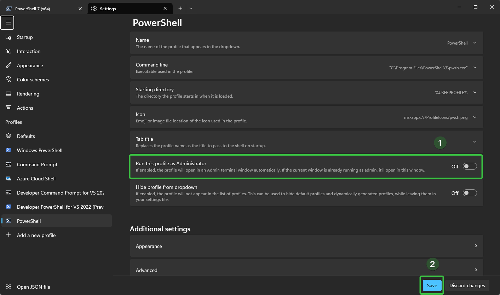
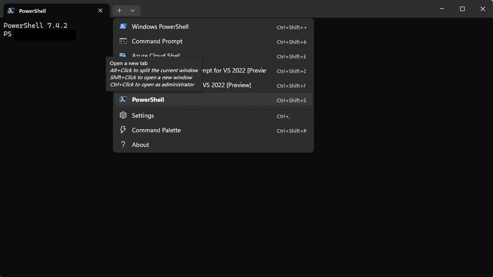

PowerShell – Průvodce a reference
Správa balíčků, oprávnění, přizpůsobení prostředí, práce se soubory a síť v PowerShellu.
Správa balíčků
Umístění modulů: C:\Users\{xxx}\Documents\PowerShell\Modules
Přizpůsobení prostředí (Oh My Posh)
Modernizace prostředí PowerShellu krok za krokem
Původní vs. nový vzhled:


Postup:
Instalace PowerShell 7+ – zjisti verzi:
$PSVersionTable→ StáhnoutInstalace Windows Terminal → Stáhnout
Spusť PowerShell jako administrátor

Nastav oprávnění na Bypass:
Set-ExecutionPolicy -Scope CurrentUser BypassRozdělení okna na části – klávesová zkratka:
Alt+Left Click
Instalace Oh My Posh a posh-git:
Invoke-Expression ((New-Object System.Net.WebClient).DownloadString('https://ohmyposh.dev/install.ps1')) Install-Module posh-gitNastavení tématu:
oh-my-posh init pwsh --config 'C:\Users\{xxx}\Themes\PowerShell\aliens.omp.json' | Invoke-Expression Import-Module posh-gitTrvalé nastavení v profilu:
notepad $PROFILEVlož do souboru:
Import-Module posh-git oh-my-posh init pwsh --config 'C:\Users\{xxx}\themes\aliens.omp.json' | Invoke-ExpressionVrať oprávnění na RemoteSigned:
Set-ExecutionPolicy -Scope CurrentUser RemoteSigned
Výběr a změna tématu
# Zobrazení dostupných témat
Get-PoshThemes
# Aplikace tématu v profilu
oh-my-posh init pwsh --config 'C:\Users\{xxx}\Documents\themes\catppuccin.omp.json' | Invoke-Expression
Historie příkazů
# Umístění souboru s historií
(Get-PSReadlineOption).HistorySavePath
Oprávnění
Zjištění aktuálního nastavení
Get-ExecutionPolicy -Scope CurrentUser
| Hodnota | Popis |
|---|---|
Restricted |
Skripty nejsou povoleny |
AllSigned |
Pouze digitálně podepsané skripty |
RemoteSigned |
Skripty z internetu musí být podepsané |
Unrestricted |
Všechny skripty povoleny bez omezení |
Undefined |
Výchozí systémové nastavení |
Změna oprávnění
Set-ExecutionPolicy -Scope CurrentUser RemoteSigned
Spuštění skriptu bez trvalé změny oprávnění
powershell -ExecutionPolicy Bypass -File "C:\{xxx}\Downloads\skript.ps1"
Práce se soubory
Změna metadat souboru
# Změna času posledního zápisu
(Get-Item "C:\Users\{xxx}\FileA.docx").LastWriteTime = "2024.10.10 17:00:00"
Úprava celkového času dokumentu Word:
- Přejmenuj
.docxna.zip - Rozbal archiv
- V souboru
docProps/app.xmluprav hodnotu<TotalTime> - Zazipuj zpět a přejmenuj na
.docx
Kopírování souborů
# Kopírování souboru ze síťového zdroje
xcopy /y /z "\\192.xxx.xx.xx\files\module.xml" "C:\Users\Test\Downloads\*"
# Kopírování do podsložek
for /D %%G in ("C:\Users\Test\Downloads\*") DO (
xcopy /y /z "C:\Users\Test\Downloads\module.xml" "%%G\SubDirectory\*"
)
Síť
# Zjištění hostname podle IP adresy
Resolve-DnsName -Name <IP adresa> -Type PTR
# Zobrazení všech fyzických adaptérů
Get-NetAdapter -physical
# Zobrazení pouze aktivních adaptérů
Get-NetAdapter -physical | where status -eq 'up'